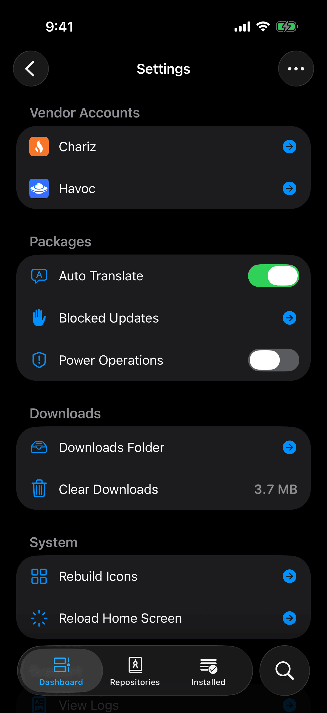
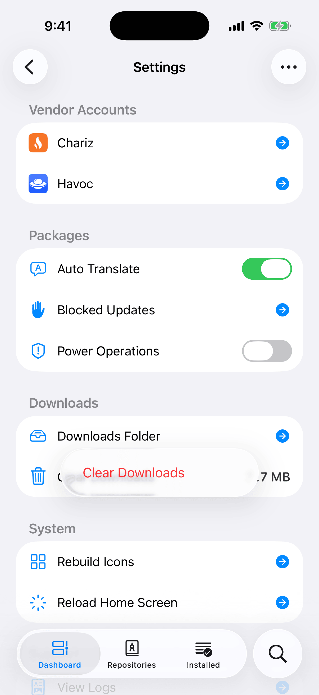
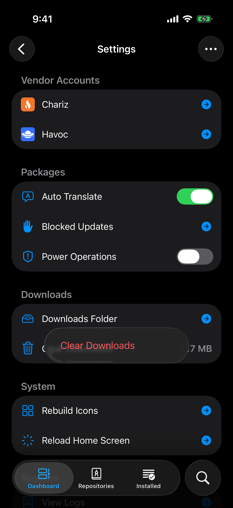

Open the Dashboard tab and tap the gear at the top right. That opens Settings. On iPad, Settings is a card in the sidebar. This chapter goes through the page top to bottom and says what each row does. Where another chapter covers a row in full, you get a summary and a link.


Vendor Accounts
The Vendor Accounts section is present only when one of your repositories sells packages. When it is there, it is the first section on the page, with one row for each such repository, under the repository's own name and icon. If you have no such repository, your page starts at Packages.
The badge at the end of a row tells you where you stand with that vendor:
- An arrow means you are signed out. Tap the row to Sign In. The vendor's sign-in page opens in a sheet.
- A green check means you are signed in. Tap the row for a menu with Purchased and Sign Out. Purchased asks the vendor what you own and lists those packages.
Sign Out does not ask first. It removes the sign-in that Irisin stored for that repository and reports Signed out. For what signing in sends to the vendor, and for buying a package, see Vendor Accounts and Purchases.
Packages
The Packages section holds three or four rows that control how packages are shown and handled.
- Auto Translate is a switch. While it is on, Irisin shows a package's page as written, then again in your language. When you turn it on, Irisin first checks that your device can translate. If it cannot, you see Unable to Translate and the switch stays off. See Auto Translate.
- Blocked Updates opens the list of updates you have blocked. The trash button at the top of that list asks Clear Blocked Updates? and then unblocks all of them at once. See Block an Update.
- Compatibility Updates is a switch, and the row exists only on roothide, where Irisin can convert rootless packages. While it is off, a newer version of a package you installed in compatibility mode is not offered as an update. Turning it on asks Allow Compatibility Updates? first. See Compatibility Updates.
- Power Operations is a switch that lets you remove packages the system requires. Turning it on asks Allow Power Operations? with this warning: Removing a package the system requires can stop the custom firmware or this app from working. See Power Operations.
A switch that asks first stays off until you tap Allow. It returns to off while the alert is open, and Cancel leaves it off. Turning any of these switches off takes effect at once, with no alert.
Downloads
Downloads Folder opens the folder of downloaded package files in Fila, a file manager. If Fila is not installed, the row offers Install Fila instead and explains: Fila opens folders and files on this device. It comes from the OwnGoal Studio repository. If https://apt.owngoal.dev is not among your repositories, the button reads Add Repository and opens the add sheet with that address filled in. If that repository is already added, the button reads Install Fila and opens Fila's page, or the repository's page when that repository has not been refreshed yet.
Clear Downloads shows the space that downloaded files use on the device. Tapping the row deletes nothing yet. It opens a small red menu, and you choose Clear Downloads again there. That cancels every download in progress and deletes both finished and partial downloads. The files of an operation that is still running stay until it ends, so the space shown may not reach zero at once. Irisin measures it again each time you open Settings.


System
Use Rebuild Icons when an installed app's icon is missing from the Home Screen, or when an operation ended with this warning: Packages were changed, but the home screen was not updated. Choose Rebuild Icons to try again. While it works you see Rebuilding Icons… with the note Rebuilding home screen icons will take some time. It ends with Icons rebuilt, or with an alert titled Unable to Rebuild Icons that gives the reason.
Use Reload Home Screen after you install or remove a package that needs the Home Screen restarted. It asks Reload Home Screen? and warns: The home screen restarts and every open app closes. Tap Reload to go ahead. Irisin closes too.
Both actions are also in the … menu of the operation page after a successful install. See Read the Operation Page.
Support
View Logs opens what Irisin itself has logged since you opened it, with filters for level and category. See The Logs.
Report Issue leaves Irisin and opens the project's new-issue page on GitHub in your browser. It attaches nothing: no log and no device details go with it, so you add them yourself. See Report Issue for what to include.
Irisin in the Settings App
Irisin's page in the Settings app has one switch, Reset on Next Launch, which is off until you turn it on. The text with it says what it does: The next time Irisin opens, it deletes its repositories, downloads, logs and settings, then turns this off. Installed packages are kept. If Irisin is still running, close it in the App Switcher first.
Use it when Irisin will not open properly, or when you want to start over without touching what is installed.
- In Irisin, open Settings, tap the … button, and choose System Settings. If Irisin will not open, open the Settings app yourself and find Irisin in its list of apps.
- Turn on Reset on Next Launch.
- Close Irisin in the App Switcher. The reset happens only when Irisin starts, not when it comes back from the background.
- Open Irisin.
Irisin starts fresh, Welcome page included, and says nothing about the reset. The switch is off again, so the next launch keeps what you add.